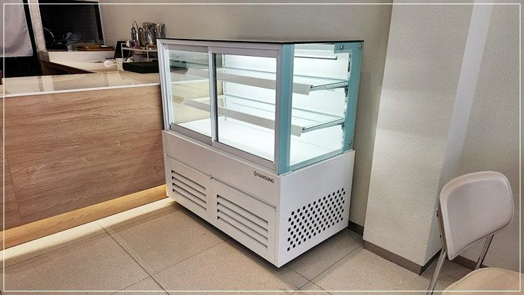
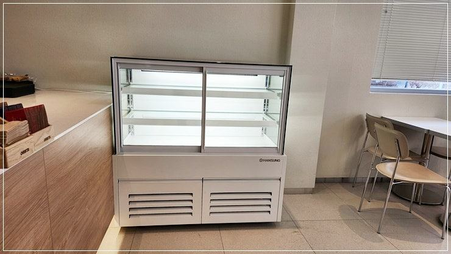
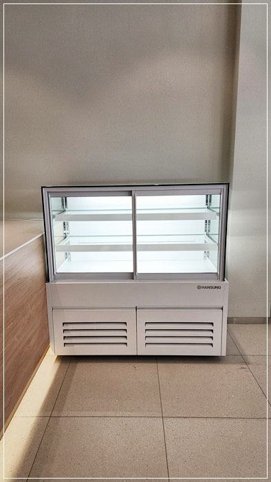
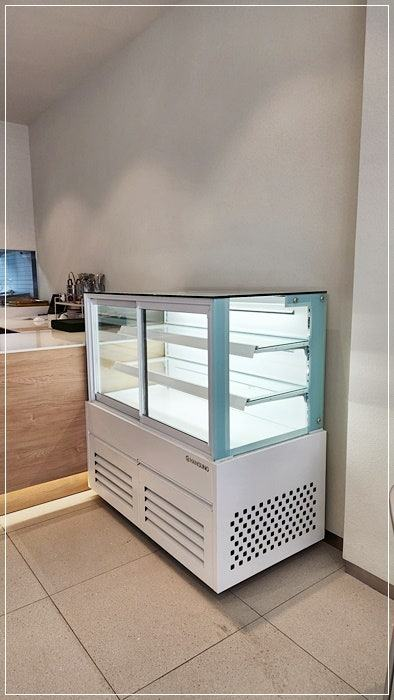
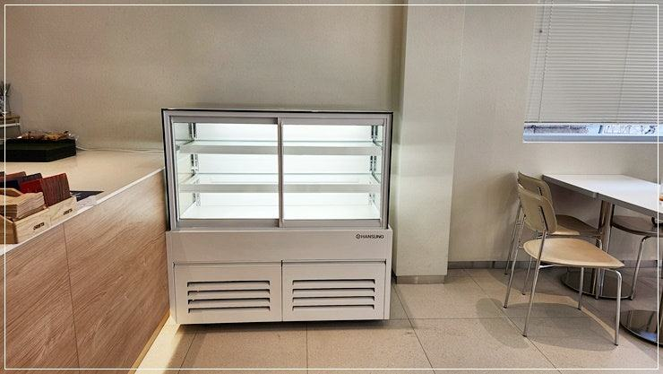
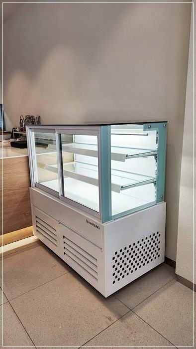
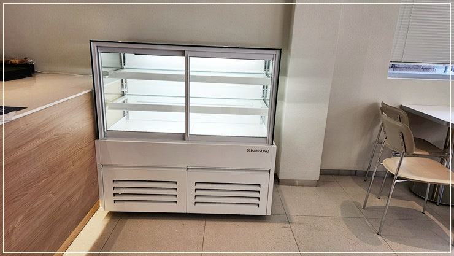

제과쇼케이스
제과쇼케이스 AS, 접수 전 점검과 수리·교체 판단 기준

제과쇼케이스가 이상하면 먼저 케이크를 다른 냉장고로 옮기고, 전원·설정 온도·문 닫힘·응축기 먼지를 확인한 뒤 모델명과 증상을 정리해 A/S를 접수하세요. 콤프레셔 고장이 반복되거나 부품 수급이 어려운 오래된 제품이라면 수리보다 교체가 결과적으로 손실이 적을 수 있습니다.
안녕하세요. 제과·디저트 진열장을 만들고 사후관리까지 맡고 있는 한성쇼케이스입니다.
베이커리는 아침에 케이크를 채워 두고 하루 장사를 시작하는데, 그 쇼케이스가 오후에 갑자기 미지근해지면 사장님 마음은 철렁 내려앉으시죠.
생크림 케이크는 몇 시간만 온도가 흔들려도 팔 수 없는 상태가 되니까요.
이럴 때 당황해서 바로 수리 기사부터 부르시는 경우가 많은데, 몇 가지만 먼저 확인해도 해결되거나 접수가 훨씬 빨라지는 경우가 있습니다.
반대로 고쳐 쓰는 것보다 바꾸는 게 나은 시점도 있고요.
오늘은 제과쇼케이스 AS를 접수하기 전 확인할 것, 접수할 때 알려야 할 정보, 그리고 수리와 교체를 판단하는 기준을 정리해 드리겠습니다.
1. 이상이 보이면 케이크부터 옮기기
온도가 오르기 시작하면 원인을 찾기 전에 생크림·무스 케이크처럼 민감한 제품부터 작업실 냉장고로 옮기세요.
쇼케이스는 진열을 위한 설비라 유리면이 넓어 온도가 한번 오르면 회복이 더딥니다.
옮긴 뒤에는 쇼케이스 문을 닫아 두고 온도 표시가 어떻게 변하는지 지켜보세요. 이 기록이 나중에 기사님이 원인을 찾는 데 도움이 됩니다.
2. 접수 전 매장에서 확인할 것
의외로 많은 경우가 설정 온도가 바뀌어 있거나, 뒷문이 완전히 닫히지 않았거나, 응축기 쪽 먼지가 쌓여 열이 빠지지 못하는 경우입니다.
베이커리는 밀가루 분진이 많아 응축기 필터가 생각보다 빨리 막힙니다.
제과쇼케이스 아래쪽이나 뒤쪽에 박스, 빵 트레이를 쌓아 두셨다면 바람이 나가는 길을 막고 있지 않은지도 보세요.
오븐 바로 옆에 설치된 경우 주변 열 때문에 냉각이 버거워지기도 합니다.
- 설정 온도가 바뀌지 않았는지
- 뒷문·앞문이 끝까지 닫히는지
- 응축기 필터에 밀가루 먼지가 쌓였는지
- 통풍구 앞을 물건이 막고 있지 않은지


3. 접수할 때 알려야 할 정보
제품 옆면이나 내부에 붙은 명판에서 모델명과 제조 연월을 확인해 사진으로 찍어 두세요. 증상은 "안 시원하다"보다 "오후부터 표시 온도가 계속 오른다", "딸깍 소리 후 팬이 안 돈다"처럼 구체적일수록 기사님이 필요한 부품을 챙겨 올 수 있습니다.
소음이 문제라면 휴대폰으로 소리를 녹음해 두시고, 성에나 물 고임이 있다면 사진을 함께 보내 주세요.
설치 위치와 매장 영업시간도 알려 주시면 방문 일정을 잡기가 수월합니다.
4. 수리할지 교체할지 판단 기준
팬 모터, 온도 조절기, 문 패킹처럼 부품 교체로 끝나는 고장은 수리하는 편이 합리적입니다. 반면 콤프레셔 고장이 반복되거나, 제조사가 없어져 부품을 구하기 어렵거나, 유리 프레임까지 손상된 경우는 교체를 함께 검토해 보세요.
매장 리뉴얼을 앞두고 있다면 고장을 계기로 단 수나 크기를 다시 맞추는 것도 방법입니다. 진열 품목이 늘었는데 기존 쇼케이스가 작다면 수리 비용을 들이기 전에 새 구성과 비교해 보시는 게 좋습니다.
- 부품 교체로 끝나는 고장: 수리
- 콤프 고장 반복·부품 단종: 교체 검토
- 리뉴얼 예정: 새 구성과 비교
체크리스트
- 민감한 케이크 먼저 옮기기
- 설정 온도·문 닫힘 확인
- 응축기 필터 밀가루 먼지 청소
- 명판 사진과 증상 메모
- 수리·교체 비용 비교
설치 후 관리까지 이어진 3단 제과쇼케이스 사례
제과점 대표님 의뢰로 제작한 3단 제과쇼케이스입니다. 손님이 직접 눈으로 고르는 진열대이면서 제품이 떨어지면 빠르게 다시 채울 수 있게 만들었고, 디저트가 깔끔해 보이도록 화이트 프레임으로 마감했습니다.
단 수는 매장에 따라 1단부터 맞출 수 있습니다.
사이즈 확인부터 유리와 프레임 소재까지 대표님과 조율해 제작했고, 설치 이후 관리 서비스까지 이어서 진행했습니다.
대표님께서는 나중에 매장을 넓힐 때도 다시 상담하고 싶다는 말씀을 남겨 주셨습니다.






자주 묻는 질문
제과쇼케이스에 성에가 계속 생기는 것도 AS 대상인가요?
문이 덜 닫히거나 패킹이 상한 경우처럼 매장에서 해결할 수 있는 원인도 있지만, 제상 장치나 팬 이상이라면 점검이 필요합니다.
패킹 상태를 먼저 확인하고 그래도 반복되면 사진과 함께 접수해 주세요.
지방 매장인데 AS 기사님이 빨리 올 수 있나요?
전국 240여 개 A/S 센터를 통해 가까운 지역에서 대응합니다. 대표전화 031-986-2458로 모델명과 증상을 알려 주시면 해당 지역 센터로 연결해 드립니다.
다른 회사 제품도 수리를 맡길 수 있나요?
제품 구조와 부품 수급 상황에 따라 가능 여부가 달라집니다. 모델명과 명판 사진을 보내 주시면 수리가 가능한지, 교체가 나은지 먼저 안내해 드립니다.
매장 조건에 맞춰 만드는 한성쇼케이스
원하시는 제품 사진과 설치할 공간 사진만 보내 주셔도 매장에 맞는 구성을 추천해 드립니다.
- 전국 240여 개 A/S 전담 센터 운영
- 본사 대량 자재 매입으로 품질 대비 합리적인 가격
- 유럽제·삼성 냉각 콤프레셔 적용
- 국내 최초 쇼케이스 전문 디자이너 상주
매장 폭과 원하는 진열 구성을 알려 주세요. 실측과 견적을 안내해 드립니다.
031-986-2458